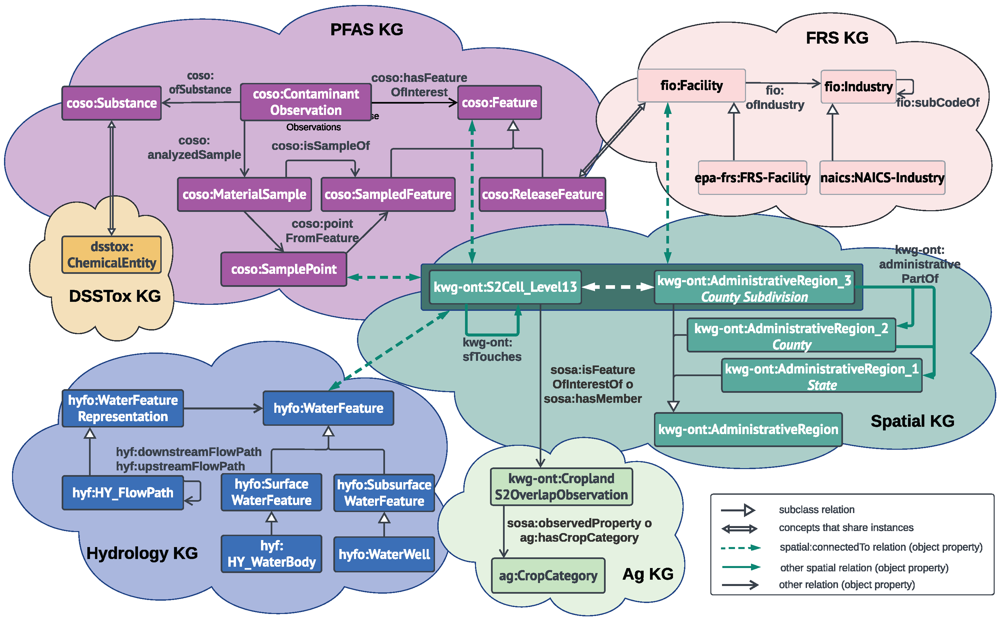

Ontologies
SAWGraph uses ontologies to define the concepts and relationships represented in its interconnected knowledge graphs. The ontologies below are organized by the knowledge graph (KG) components they support and cover PFAS observations and samples, facilities and industries, hydrology, spatial relationships, agricultural context, and chemical substances.
Ontology Framework
SAWGraph reuses and extends existing ontologies to support consistency and interoperability across datasets. Each knowledge graph component also uses dataset-specific extensions where needed to preserve the structure and semantics of source data while aligning them with the broader SAWGraph framework.

Ontologies Overview Video
This video introduces the ontologies that structure SAWGraph’s interconnected knowledge graphs and explains how they represent and integrate chemical, contaminant, facility and industry, spatial, hydrologic, and agricultural information.
PFAS KG
| Ontology | Description | Source | Documentation | Publication |
|---|---|---|---|---|
| The Contaminant Observations and Samples Ontology (ContaminOSO) | The core ontology for the PFAS KG, defining key concepts and relationships related to environmental sampling and contaminant releases. An extension of SOSA . | GitHub | ContaminOSO | Hahmann et al. (2025) |
FRS KG
| Ontology | Description | Source | Documentation | Publication |
|---|---|---|---|---|
| Facilities and Industries Ontology (FIO) | Concepts and relationships among facilities, industries, and organizations | GitHub | FIO | Schweikert & Hahmann (2025) |
| Facility Registry Service | Dataset-specific ontology extension for the EPA Facility Registry Service | GitHub | ||
| North American Industry Classification System | Dataset-specific ontology extension for NAICS industry classifications | GitHub |
Spatial KG
SAWGraph uses topological enrichment with S2 cells and Administrative Region 3 features, including county subdivisions and towns, to semantically link data across knowledge graph components by location. This approach is described further in Schweikert et al. (2025).
| Ontology | Description | Source | Documentation | Publication |
|---|---|---|---|---|
| SAWGraph Spatial Ontology | A KnowWhereGraph Ontology (KWG-Ont) extension that simplifies querying of spatial predicates by adding a superproperty for spatial relations other than disjoint | GitHub | ||
| KnowWhereGraph Ontology | Ontology for representing and querying geospatial data, including administrative regions and precomputed topological relations | KnowWhereGraph | ||
| GeoSPARQL | OGC standard for representing and querying geospatial data on the Semantic Web | OGC | GeoSPARQL |
Hydrology KG
| Ontology | Description | Source | Documentation | Publication |
|---|---|---|---|---|
| SAWGraph Water Ontology | Ontology for representing surface and groundwater. It combines concepts from HY_Features, HYFO, and GWML2 and also aligns with Geoconnex. | GitHub |
DSSTox KG
| Ontology | Description | Source | Documentation | Publication |
|---|---|---|---|---|
| DSSTox Ontology | Ontology for representing chemical substances and their properties based on the DSSTox database structure | GitHub | Zhang et al. (2026) |